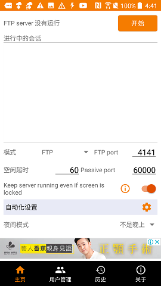
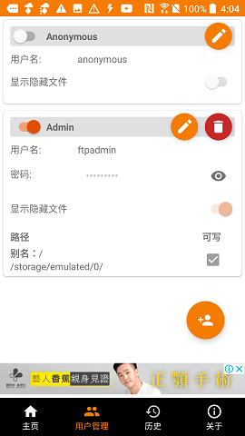
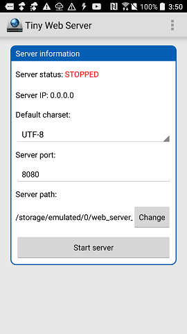

Android手機架設伺服器教學
目錄:
1:介紹
網路是我們生活中不可或缺的工具，我們常常會在一些網站上面放上一些資料(例如在FB發布文章、或是用Google協作平台製作網站等)。
但是通常這種方式會有諸多限制，畢竟是利用他們的伺服器資源，這對於一些想要建立更加個人化的網站，但手邊沒有例如NAS機這種高級伺服器設備的話，這篇
教學文應該能夠派上用場
P.S.此教學文重點會放在如何將Android手機變成網站伺服器的方法，如果是建立網站(程式設計等內網站伺服器的方法，如果是建
立網站(程式設計等內容)這裡將不會提及，網站運行時如果有手機故障的狀況或者頁面有侵犯著作權的行為，這裡不會承擔任何責任！
2:裝置準備
1:一台舊的Android手機(性能不要太差)
2:管理伺服器的電腦裝置(可有可無，有的話會更加方便)
3:一台WiFi路由器(可向電信公司申請一個靜態IP)
3:流程
1:手機取得root權限
2:手機端下載HTTP server的軟體、webDAV server(當作下載資源區)、FTP server
(下載參考連結在底下)
3:在手機的內部儲存空間中加入一個資料夾當作伺服器的根目錄(名字不要有空格，這樣如果有需要在文字介面下傳輸檔案比較方便)
4:開啟手機的FTP server軟體，並設置如下:

首頁的設定如下，接著點擊"用戶管理"

這裡原先不會看到Admin這個人員，按一下右下角新增人員圖示，並設定名字:"Admin"、用戶名:"ftpadmin"、密碼自己設定。
下面訪問路徑選剛剛創建的資料夾，最後按勾
5:電腦(這裡使用Windows系統)下載Filezilla(下載參考連結在底下)
6:電腦或手機連線到路由器的WiFi，並上
ip查詢網頁，把IP位址複製下來
7:Filezilla軟體點進去會看到首頁，上面主機輸入剛剛複製的IP位址，使用者名稱輸入"ftpadmin"，密碼輸入
剛剛在手機FTP server軟體內設定的密碼，port輸入"4141"，確認手機有連線到路由器，接著按"快速連接"來連接手機

8:把寫好的html程式改名為"index.html"，並按右鍵選擇上傳
9:開啟Web server應用程式，設定如下圖(最下面路徑選擇剛剛創建的資料夾)，接著按"Start server"，就開始運行了

10:如果要建立外往可訪問的伺服器的話，可以將路由器裡面的虛擬伺服器的ip設定成手機的內部ip(192.168.X.X)，
外網連線到之前查詢的那個外網ip就可以直接連線到手機伺服器了，如果要公開發布的話也可以去申請網域名
(我是用
no-ip網站建立的免費域名)
4:資源
下載區